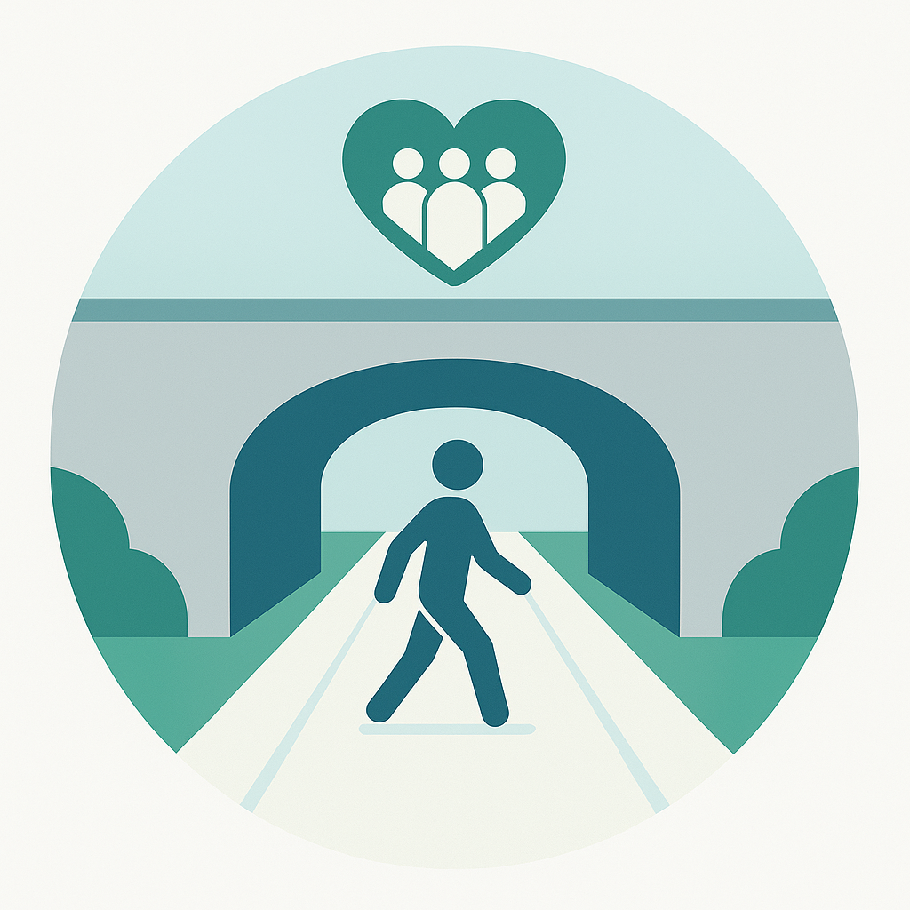

Tunnel sécuritaire pour tous
Restons informé
🎧 Ici Radio-Canada : Analyse de la vie municipale avec Sylvie Tardif (à 6:20)
🌍 Ici Radio-Canada : Chemins de fer Québec-Gatineau veut discuter du tunnel Saint-Maurice avec la Ville
🎧 106.9 FM : Tunnel Ste-Cécile / St-Sacrement : Une pétition pour améliorer son état médiocre
📄 Le Nouvelliste : Tunnel Saint-Maurice: «C’est dangereux pour tout le monde»
🎧 Ici Radio-Canada : Une pétition pour réfection du tunnel Boulevard-Saint-Maurice
🌍 Ici Radio-Canada : Une pétition pour la réfection du tunnel du boulevard du Saint-Maurice
📺 Ici Radio-Canada : Un tunnel en décrépitude à Trois-Rivières
📺 Ici Radio-Canada : Citoyens dénoncent piteux état du tunnel Saint-Maurice à Trois-Rivières